Brecha digital: desafío urbano vs rural
Visualización de datos sobre el acceso a internet en hogares móviles y fijos en América Latina. El análisis destaca la disparidad crítica entre zonas urbanas y rurales (2022), revelando cómo la conectividad sigue siendo un privilegio geográfico.
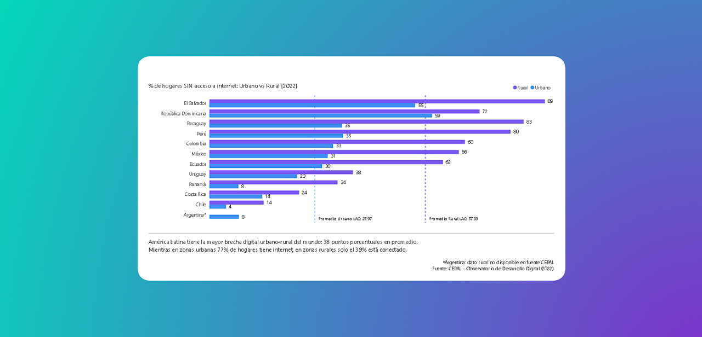
Carrera hacia el cielo: los edificios más altos del mundo
Análisis comparativo de los 300 edificios más altos del mundo (completados, en construcción y propuestos). Incluye sistema de altura dinámica (m/ft) y filtros multidimensionales para entender las tendencias de verticalidad urbana global.
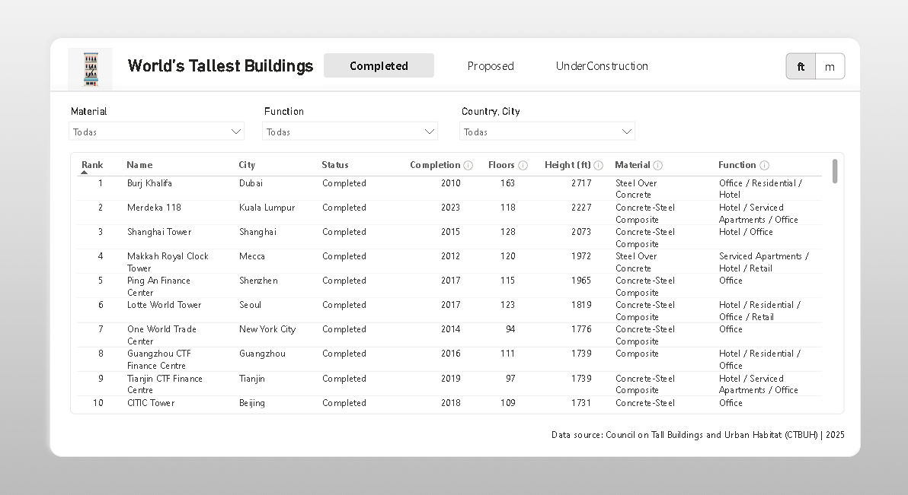
Metodologías de Cambio Cultural
Presentación interactiva sobre el impacto social de las estrategias implementadas en el Sistema Nacional de Cuidado. Detalla la transformación cultural y el fortalecimiento de las redes de cuidadores con claridad estratégica.

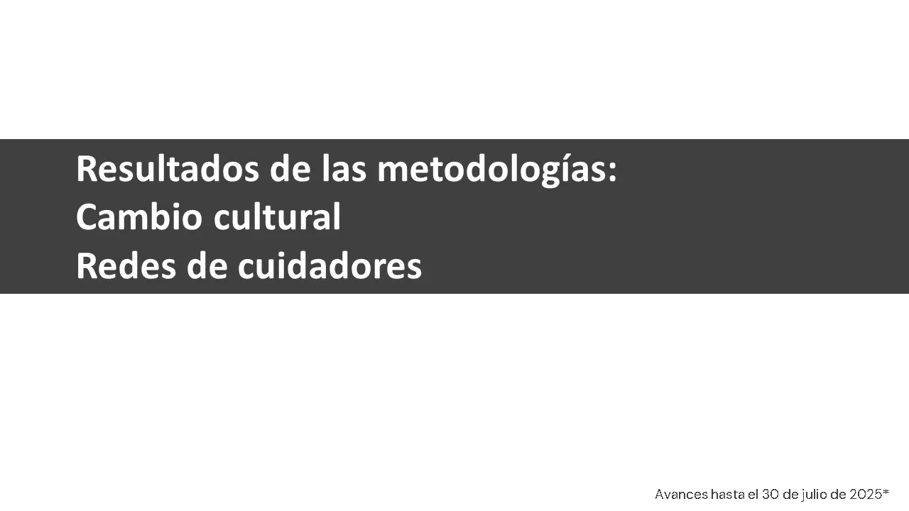
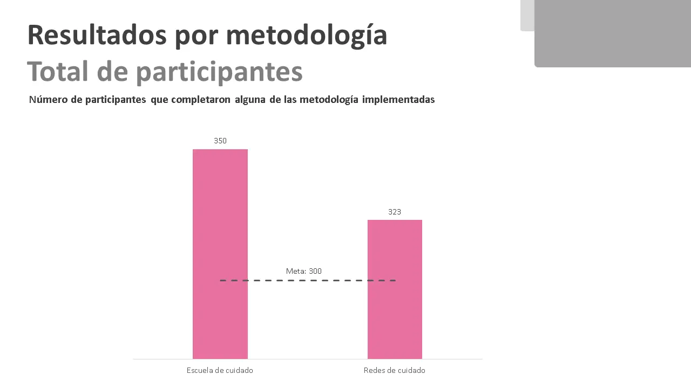
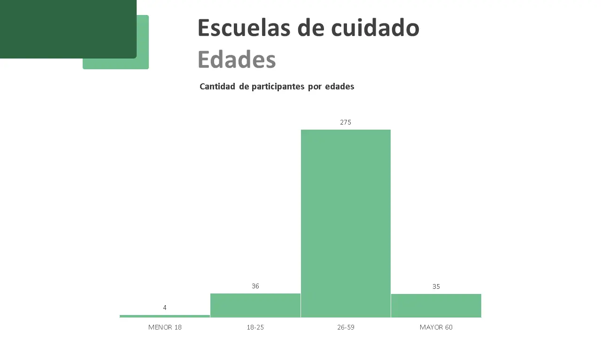

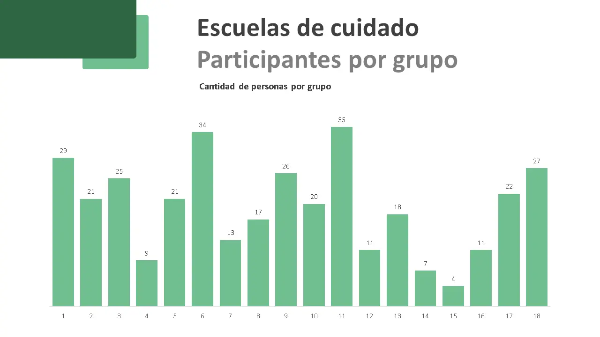
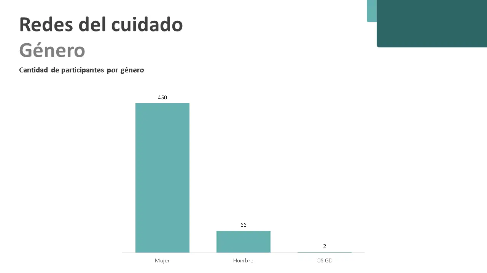

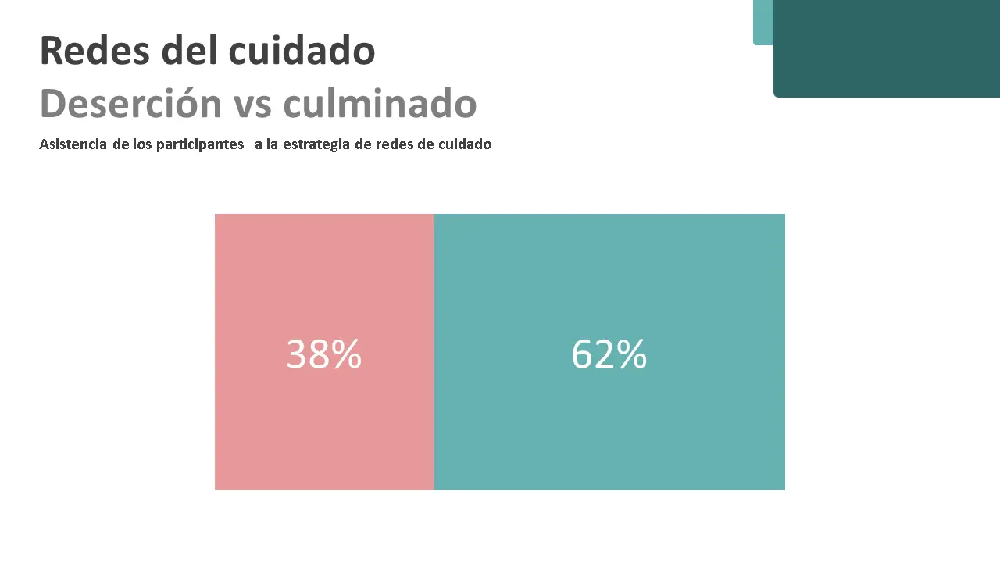

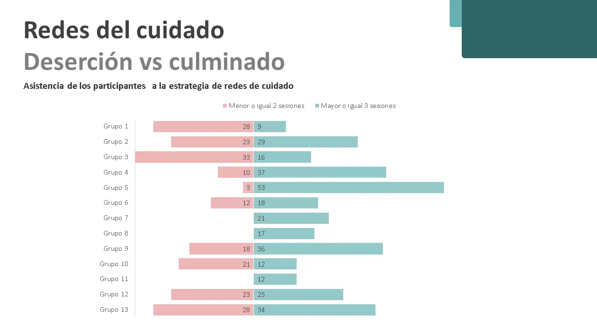
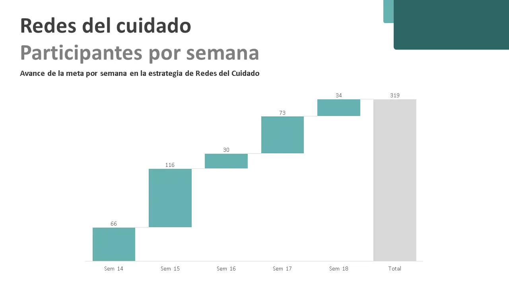

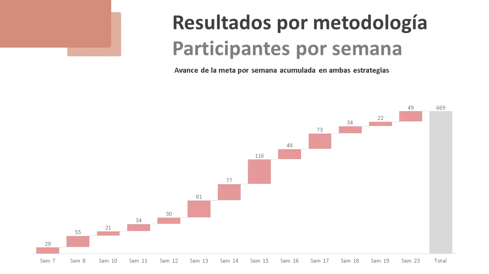
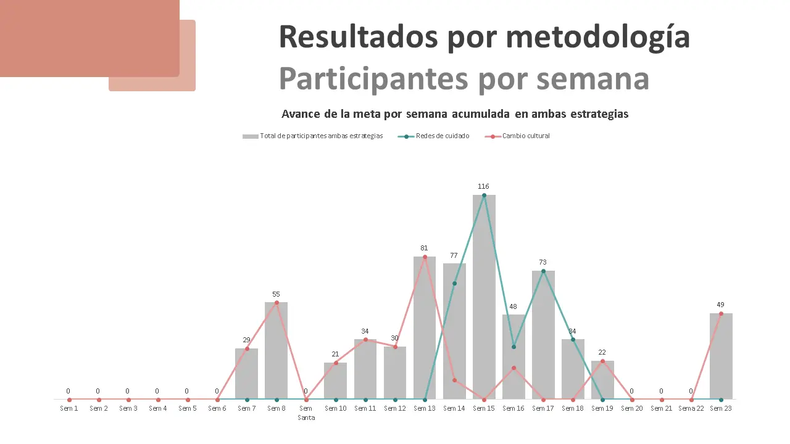

Territorialización del sistema nacional de cuidado
Informe sobre los avances de territorialización en el área metropolitana de Cúcuta. Prioriza una arquitectura de información limpia para facilitar la comprensión de indicadores territoriales críticos.
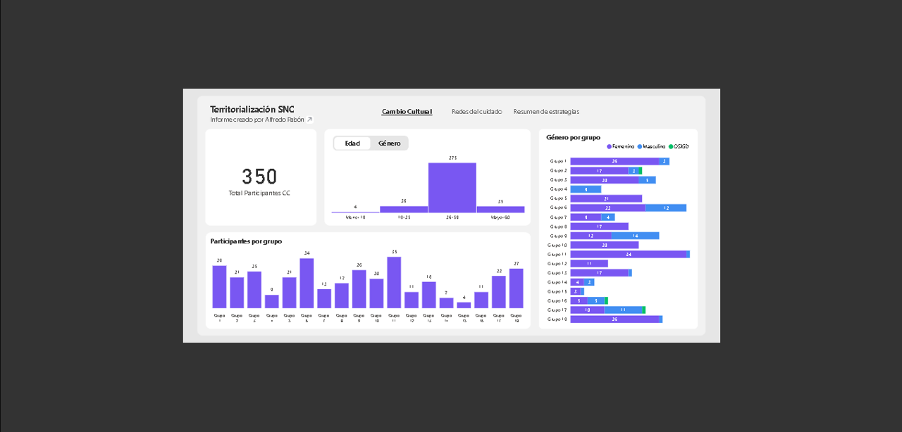
Mundo Homeopático: UI/UX Re-design
Transformación de un catálogo estático en una plataforma interactiva. Estructura de información densa resuelta mediante sistemas de filtrado inteligente y una jerarquía visual orientada a la legibilidad.